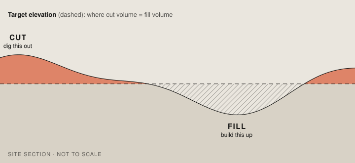
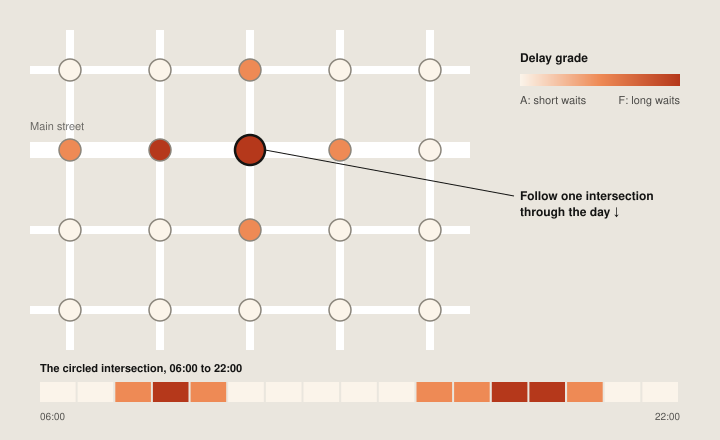

Cut and fill
An earthwork estimate in Google Earth. Draw a site and see how much soil has to be dug out or brought in to level it, and where.

01Context
Before a site can be graded, someone has to estimate how much soil comes out and how much goes back in. It’s one of the first numbers on any construction project, it drives the grading budget, and getting it usually means survey data and CAD software.
An early estimate doesn’t replace a survey. It tells a team what the ground is doing soon enough to shape the survey, the building footprint and the questions they take to the field.
02Approach
The back end takes a site drawn on the map and Earth’s elevation data, and calculates how much material sits above and below a target elevation. It can find the elevation where cut equals fill, so nothing has to be trucked in or out, or calculate the volumes for any elevation a user sets.
03Outcome
Cut and fill is live in Google Earth, one of four terrain analysis tools alongside elevation contours, slope and aspect. It’s available on every Google Earth plan.
Traffic signal level of service

Say hello.
Working on something for the built environment? I’d love to hear about it.